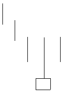

تحلیل تکنیکال
الگوهای کندل استیک ها
الگوهای برگشتی صعودی
Inverted Hammer

الگوی هامر معکوس (چکش معکوس) مانند الگوی چکش در انتهای یک روند نزولی تشکیل می شود. سایه بالایی بلند، سایه
پایینی کوتاه و یا وجود نداشتن سایه پایینی و بدنه ای حداثر یک دوم سایه بالایی از خصوصیات این الگو می باشد .در این
الگو رنگ بدنه تفاوتی ندارد اما بدنه صعودی (سفید) قدرت بیشتر این الگو را برای بازگشت روند نشان می دهد